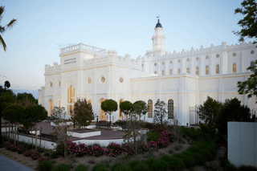
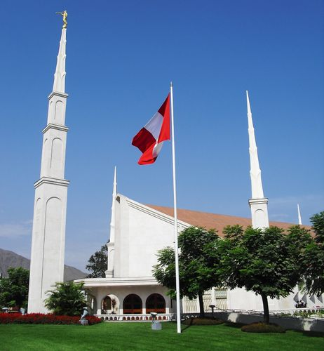

Temple Album
☰
Home
Old
New
Large
Small
Latter-day Saint Temples
Salt Lake Temple
Provo City Center Temple

St. George Utah Temple
Nauvoo Illinois Temple
Manti Utah Temple
Logan Utah Temple
Rome Italy Temple
Paris France Temple

Lima Peru Temple